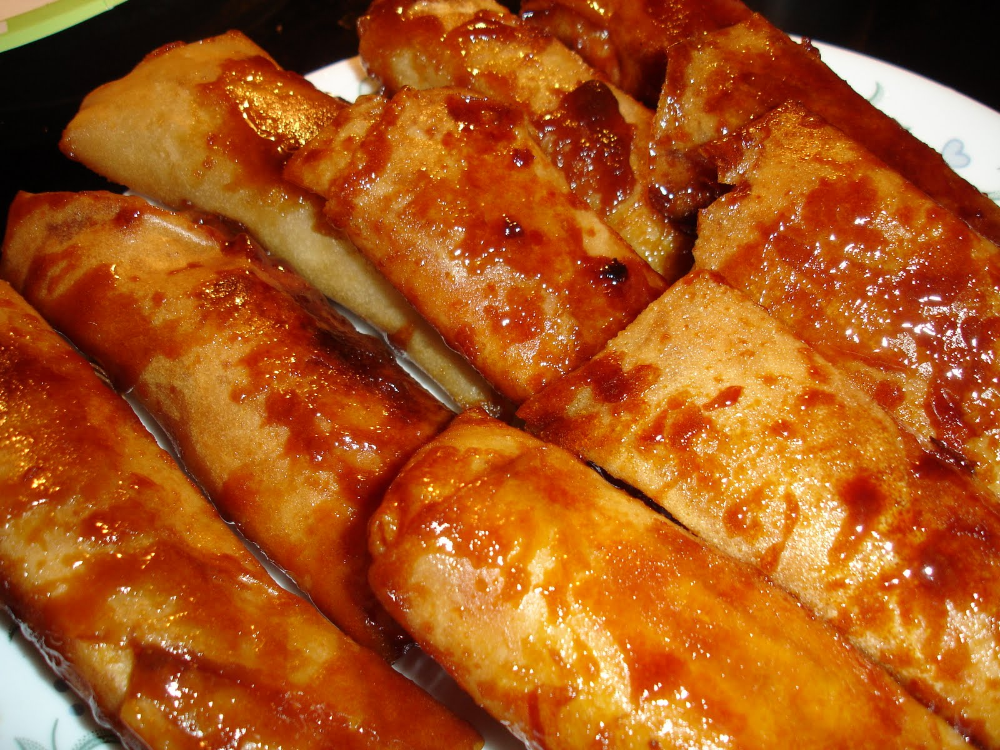

Turon is a type of Filipino snack. It is also called deep-fried banana rolls or banana lumpia.
A typical Filipino meryenda and dessert, Turon has gained popularity throughout the years.
Ingredients
- 6 pieces bananas saba or plantains, cut in half (lengthwise)
- 1 cup jackfruit ripe,sliced
- 1 1/2 cup sugar
- 12 pieces lumpia wrapper
- 2 cups cooking oil
Steps
- Roll the banana on the sugar plate and ensure that the banana is coated with enough sugar
- Place the banana with sugar coating in the spring roll wrapper and add some ripe jackfruit
- Fold and lock the spring roll wrapper, use water to seal the edge
- In a pan, heat the oil and put-in some sugar.Wait until the brown sugar floats
- Put-in the wrapped banana and fry until the wrapper turns golden brown and the extra sugar sticks on wrapper
- Serve hot as a dessert or snack. Share and Enjoy!
Nutrition
Serving:6g